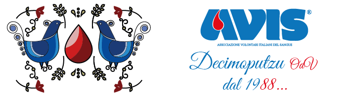

Dona il sangue, salva una vita
Dal 1988 l'Avis Comunale Decimoputzu OdV è al servizio della comunità putzese per promuovere la donazione di sangue volontaria, periodica, associata, non remunerata, anonima e consapevole.
Scopri le date delle donazioni Prenota la tua donazionePuoi prenotare la tua donazione di sangue chiamando o inviando un messaggio WhatsApp!